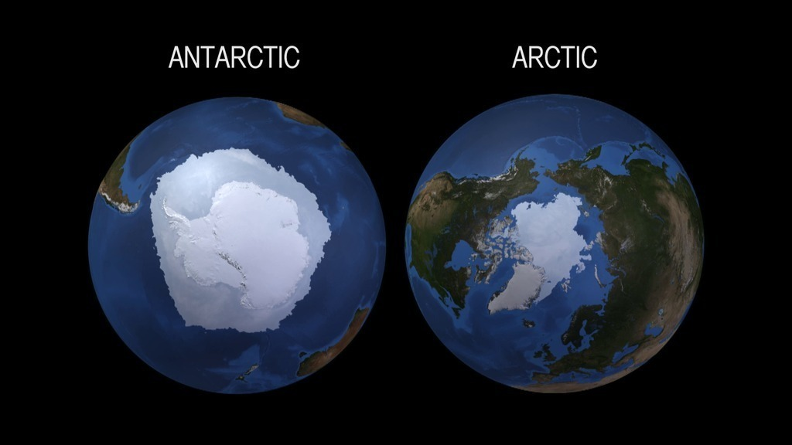

I use Earth system models and observations to investigate physical processes and the changing climate in the Arctic and Antarctic.
I am interested in understanding exchanges of energy and moisture between the sea ice, atmosphere, and ocean. I also
investigate how the changing polar regions will affect natural ecosystems and the people living and working in these regions.
I also seek out opportunities to communicate about the Earth system and polar science in novel ways and to all types of audiences.

Earth System Models are important virtual laboratories for scientists to better understand our planet. In these
virtual worlds we can build process understanding, test hypotheses, and create projections of how the Earth system may change in the future
or has changed in the past. I primarily use the Community Earth System Model (CESM), run on supercomputers, and which I analyze remotely.
On a typical day I work at my desk in Boulder, CO and analyze model data for several projects.

I study the polar regions because I'm fascinated by the extreme cold temperatures, winds, and darkness. I am particularly interested in exchanges
between the atmosphere, ocean, and sea ice in both the Arctic and Antarctic. The Arctic encompasses a frozen sea surrounded by land, while the Antarctic
is land surrounded by sea ice. There are both similarities and differences in these regions that make them unique and fascinating to study.
year round

The Arctic is warming faster than anywhere else on the planet as the Earth warms, and one of the most dramatic climate signals is the dramatic
loss in summer sea ice over the past several decades. I primarily use models and remote observations to study the Arctic, but I have been to Utqiagvik, AK
once for a workshop where sea ice modelers and observers learned from one another about scientific techniques and tools.

The Antarctic is the most remote desert in the world. I mainly study the weather and sea ice around the Antarctic continent, how the coastal regions
are changing, and how the changing climate may impact the ecosystem. I primarily use models and remote observations to study the Antarctic, but
I was lucky to join the 2011-2012 field season out of McMurdo Station to help maintain and install automatic weather stations.